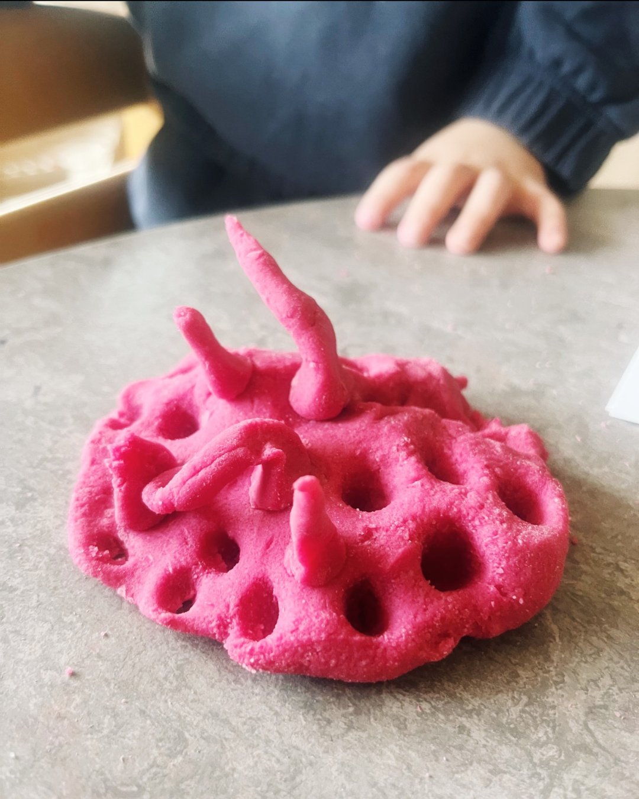
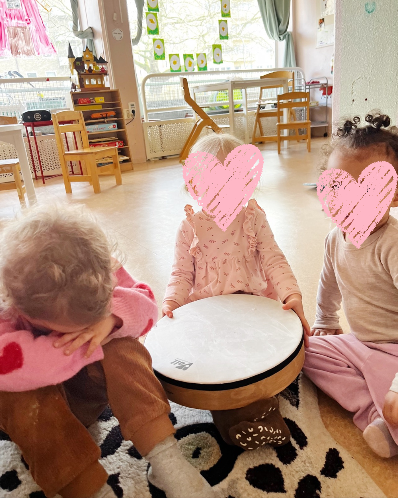
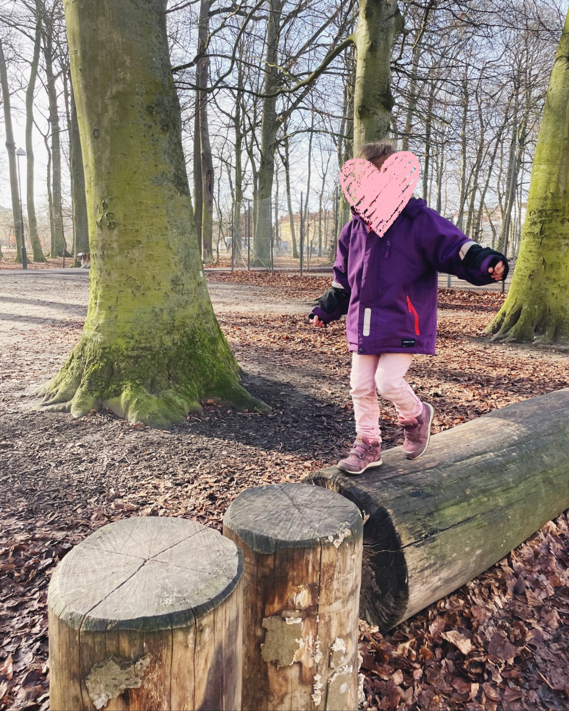
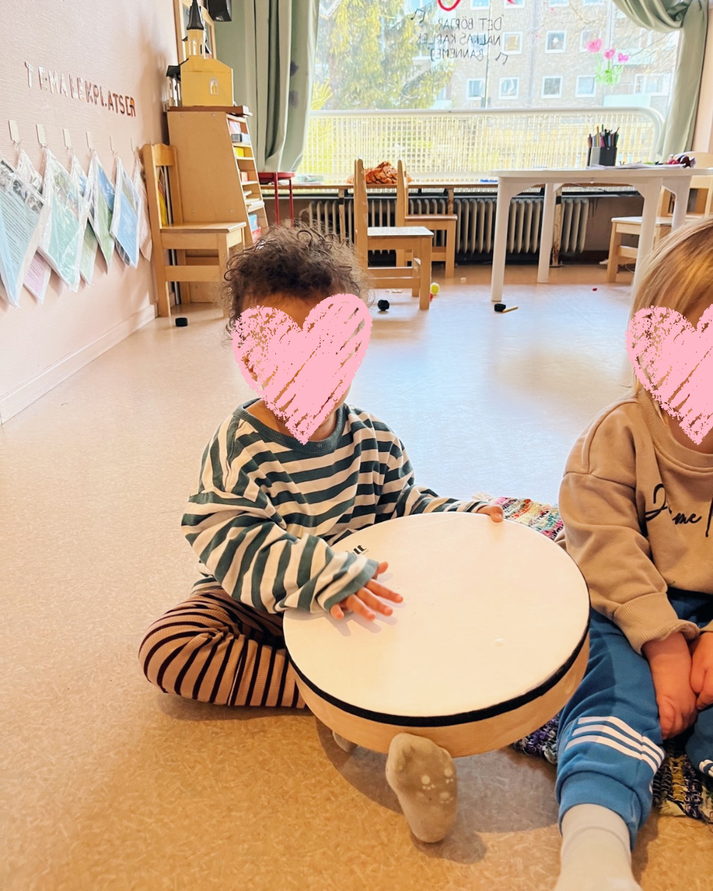
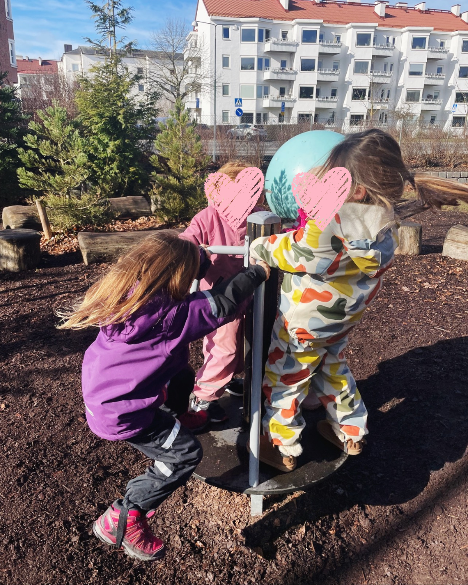
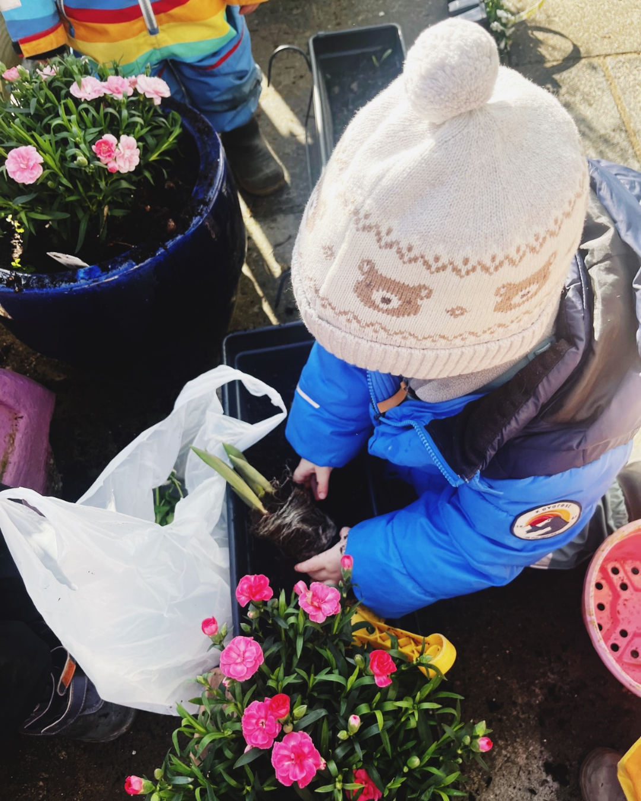
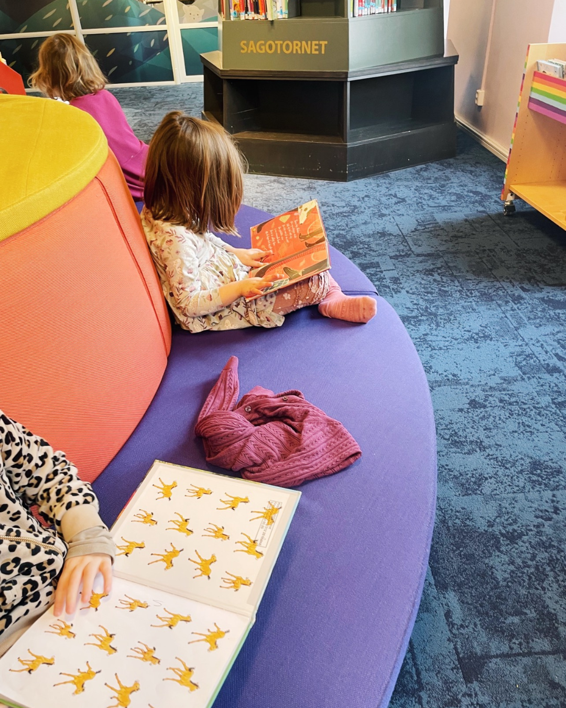
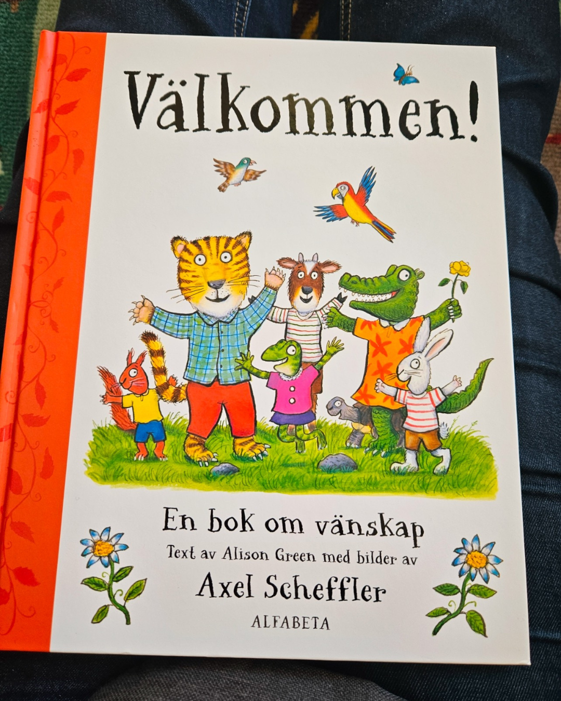
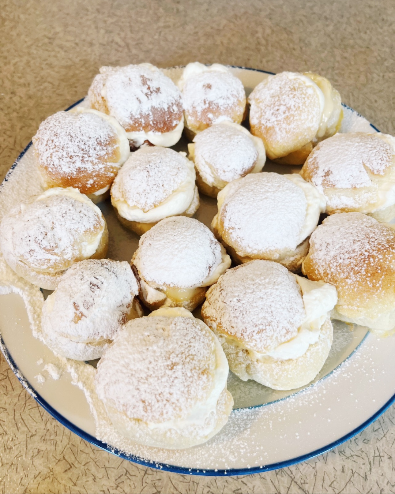
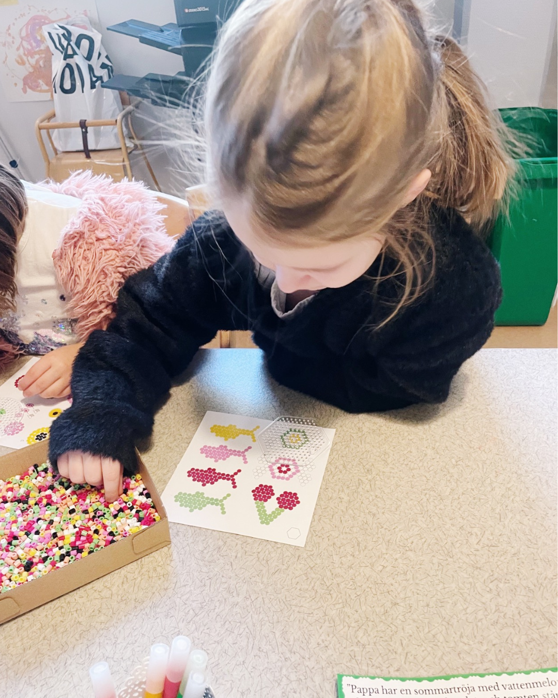

Våra barn är det bästa som finns
Förskolan Vilda Väster är en fristående förskola som drivs som en ekonomisk förening. Förskolan är ett föräldrakooperativ som har funnits sedan 1993.
Förskolan ligger i stadsdelen Västra Innerstaden som är ett område med både höghus och villor. Vi har stora, ljusa lokaler på 307 kvm. Vi har även en liten utegård som är en del av Fridhemstorget. Med tanke på förskolans läge använder vi närliggande parker runt omkring förskolan samt Ribersborgsstranden som bara är fem minuters promenad bort.
Vi arbetar efter de riktlinjer och mål som finns i skollagen och Lp 98, den nya reviderade läroplanen. Vi följer upp och utvärderar arbetet kontinuerligt under terminerna och har en gemensam utvärdering efter varje termin.
På förskolan finns tre tillsvidaretjänster och en deltidstjänst varav två stycken är förskollärare och en är barnskötare. Vi har även en kock/lokalvårdare på förskolan. En av förskollärarna innehar även rollen som förskolechef.
Vår profil "Hälsa och Natur – i ur och skur" genomsyrar allt vi gör. Vi vill att barnen ska förstå att natur och människor hör ihop.
Vi drivs som en ekonomisk förening utan vinstintresse, grundad 1993. Tillsammans skapar vi en trygg och engagerad förskola.
Med förskolans läroplan som grund arbetar vi i mindre grupper för att ta tillvara varje barns intressen och förmågor.
Vi finns på Fridhemstorget i Malmö, nära parker, strand och stadsliv – perfekt för våra utflykter och upptäckter.
"Utbildningen i förskolan ska lägga grunden för ett livslångt lärande. Den ska vara rolig, trygg och lärorik för alla barn. Utbildningen ska utgå från en helhetssyn på barn och barnens behov, där omsorg, utveckling och lärande bildar en helhet."— Läroplan för förskolan Lpfö 18
Vi på förskolan Vilda Väster erbjuder en allsidig pedagogisk verksamhet med förskolans läroplan som grund för det livslånga lärandet. Vi delar in barnen i mindre grupper för att lättare kunna ta till vara varje barns intressen och förmågor. Varje barn ska ha rätt att utvecklas i en harmonisk och förberedd miljö efter egen mognad.
Förskolan arbetar aktivt med frågor som rör natur och hälsa och har skapat sin profil – Hälsa och Natur i ur och skur – kring dessa teman. Denna inriktning syftar till att främja ett helhetstänk hos barnen och en förståelse för att natur och människor är del av samma system. Vi besöker ofta havet och stranden som bara är 5 minuters promenad från förskolan. Vidare lägger vi stor vikt vid fysisk aktivitet och grovmotorik – bland annat genom utflykter till skridskobana, simhall och sporthall.
Vi tar med bestämdhet avstånd från alla tendenser till trakasserier och kränkande beteende. Verksamheten på förskolan ska präglas av att alla barn har lika rättigheter oavsett kön, etnisk tillhörighet, religion, sexuell läggning eller funktionshinder.
Vår vision är att alla barn ska lyckas!
Våra värderingar går i linje med Lpfö 98, FN:s barnkonvention och Malmö Stads policy. Vi har handlingsplaner för kriser, om ett barn skulle försvinna eller utsättas för övergrepp, samt en likabehandlingsplan.
Kompisklubben för de äldsta barnen. Övriga barn får möjlighet till sång, dans, musik och rytmik.
Barnen arbetar i projektgrupper med olika teman – utforskning och skapande.
Miniröris och gymnastik beroende på ålder – rörelse och glädje!
Barnen arbetar i projektgrupper med olika teman – fördjupning och nyfikenhet.
Utflykter till stranden eller lekplatser i vårt närområde. Vi har även heldagsutflykter med matsäck och teaterbesök.
"Förskolan ska erbjuda barnen en, i förhållande till deras ålder och vistelsetid, väl avvägd dagsrytm och miljö."— Läroplan för förskolan, Lpfö 98
Förskolan följer Malmö stads öppettider. Just nu är våra öppettider 7.30–17.00.
Kreativt skapande med färg, lera, papper och mycket mer.
Ett mysigt rum för avkoppling, sagor och lugna stunder.
Vårt stora, ljusa rum – här får fantasin flöda i fri lek.
Här bygger och konstruerar de mindre barnen.
Stort utrymme för bygglek, snickeri och skapande.
Här samlas vi för gemensamma aktiviteter och stunder.
Här lagas näringsrik, hemlagad och ekologisk mat varje dag.
Förskolan Vilda Väster bedrivs som en föräldrakooperativ förskola. Det innebär att förskolan bedrivs i privat regi som en ekonomisk förening, enligt kommunens riktlinjer. Föreningen består av vårdnadshavare till de barn som går på förskolan.
Beslutande organ är föreningens styrelse, som också är huvudman för förskolan, och utgörs av sex vårdnadshavare. Personalen är anställd av den ekonomiska föreningen. På det här sättet får föräldrarna insyn och engageras i verksamheten.
Föräldrakooperativet Vilda Väster är politiskt och religiöst obundet. Vi är tillsammans med många andra förskolor, fritids och friskolor medlemmar i arbetsgivarföreningen Fremia.
Att välja en föräldrakooperativ förskola innebär att du förväntas bidra på olika sätt i föreningen. Det finns ansvarsgrupper för löpande uppgifter under året, samt ett schema för gårdsstädning.
Två dagar om året träffas alla föräldrar för att förbättra miljön på förskolan – ett ypperligt tillfälle att lära känna andra föräldrar. Dessutom träffas alla föräldrar en gång per termin: på våren vid årsmötet och på hösten vid den extra årsstämman.
Utan föräldrarnas engagemang kan förskolan inte bedrivas. Det är helt avgörande att du som vårdnadshavare är beredd att ta ett lite större ansvar under den tid ditt barn går här.
Om du är intresserad av en plats ber vi dig först läsa igenom vad en föräldrakooperativ förskola innebär. När du tackar ja till en plats på Vilda Väster betyder det att du är beredd att ta ett lite större ansvar och engagera sig i förskolan.
Intagning av nya barn sker vanligtvis en gång per år, i augusti. Intagning görs baserat på kötid och vi tillämpar syskonförtur. Vi tillämpar samma avgifter som gäller för den kommunala förskolan – maxtaxa gäller även hos oss.
Förskolan erbjuder omsorg under den tid som vårdnadshavare förvärvsarbetar eller studerar. Öppettider: 7.30–17.00.
Melodifestivalen är alltid ett stort och glädjefyllt event hos oss! Barnen klädde ut sig i glitter och färg, dansade och sjöng inför en hejig publik av kompisar och pedagoger. Varje barn fick rösta på sin favorit och spänningen var på topp när resultatet räknades. Ett fantastiskt tillfälle att fira musik, gemenskap och barnens naturliga lust att framträda.
Vi firade Eid tillsammans och det blev en varm och minnesvärd stund för alla. Barnen lärde sig om högtiden, skapade egna dekorationer och vi delade en gemensam festmåltid. På Vilda Väster värnar vi om mångfald och ser varje kultur som en berikande del av vår gemenskap. Att fira varandras högtider skapar förståelse, respekt och vänskap som bär hela livet.
Påsken firas med stor entusiasm på Vilda Väster! Vi pysslar påskdekorationer av ägg, fjädrar och glitter, jagar påskägg gömda runt om i lokalerna och trädgården, och lagar traditionell påskmat i köket. Barnen klär ut sig till påskkäringar och häxor och går runt i kvarteret. Högtiden blir ett härligt tillfälle att prata om svenska traditioner och årstidernas växlingar.
På Alla hjärtans dag skapade barnen egna kärlekskort, hjärtmobiler och dekorationer till sina allra käraste – med färgglada färger, klistermärken och massor av hjärtan. Det är ett fint tillfälle att prata om vänskap och kärlek i alla dess former. Barnen strålde av stolthet när de fick ta hem sina alster och ge dem till mamma, pappa, syskon eller en god vän.
Under OS-perioden arrangerade vi våra alldeles egna olympiska lekar på förskolan! Med löpning, hopp, balansövningar och lagkapper tävlade barnen med hjärtat på rätt ställe. Vi pratade om sportsmanship, att göra sitt bästa och att heja på varandra. Ceremonin med hemgjorda medaljer och viftande fanor var en av årets absoluta höjdpunkter – alla var vinnare!
Skapande och pyssel är en djupt förankrad del av vår vardag på Vilda Väster. Med sax, lim, pärlor, färg, lera och återbruksmaterial får barnens fantasi flöda fritt i ateljeén. Vi arbetar utifrån varje barns egna idéer och intressen – det finns inga rätt eller fel, bara utforskande och glädje. Att skapa med händerna stärker finmotorik, koncentration och självförtroende.

Lera är ett magiskt material som engagerar alla sinnen på en och samma gång. I ateljeén knådar, rullar och formar barnen sina alster med djup koncentration och kreativitet. Det mjuka materialet inbjuder till experimenterande – vad händer om man trycker, klämmer eller rullar? Lera är också ett utmärkt verktyg för bearbetning av känslor och upplevelser.

Samlingstunden är hjärtat i vår dag på Vilda Väster. Här möts vi som grupp, sjunger sånger, pratar om vad som händer i världen och planerar dagens aktiviteter tillsammans. Barnen lär sig lyssna på varandra, ta plats och uttrycka sina tankar och åsikter. Det är en stund av trygghet, gemenskap och demokrati i miniatyr – grunden för ett gott liv tillsammans.

Utflykter är en viktig del av vår pedagogik. Vi besöker Ribersborgsstranden som ligger bara fem minuters promenad bort, utforskar parker och skogar, och tar oss ibland längre med vår elcykel. Ute i naturen väcks barnens nyfikenhet på riktigt – de hittar insekter, samlar pinnar, studerar årstidernas förändringar och förstår att de är en del av något mycket större än sig själva.

Musik och rytm genomsyrar verksamheten på Vilda Väster. Med trummor, rytminstrument, sång och dans uttrycker barnen sig kreativt och lär sig samspel och timing. Att spela musik tillsammans stärker barnens förmåga att lyssna, ta tur och skapa något gemensamt som är större än delarna. Det är också ett underbart sätt att bearbeta energi och känslor på ett positivt sätt.

Fridhemstorget och de omkringliggande lekplatserna är vår förlängda gård. Här utmanar barnen sin grovmotorik i klätterställningar, gungor och balansredskap, samarbetar i gemensamma lekar och hittar på egna äventyr. Fri lek utomhus är oerhört viktig för barnens fysiska och sociala utveckling – och det märks tydligt hur glada och livfulla barnen är när de får röra på sig.

Trädgården och utomhusmiljön är ett fantastiskt levande klassrum. Vi planterar frön, vattnar, skördar och observerar naturens kretslopp från vår till höst. Barnen lär sig att mat inte bara finns i affären utan faktiskt kommer ur jorden – en insikt som väcker vördnad och ansvarskänsla. Att ta hand om levande växter tränar tålamod, omsorg och förståelse för naturens villkor.

Regelbundna biblioteksbesök är en älskad tradition på Vilda Väster. Bibliotekets värld öppnar sig med tusentals berättelser, bilder och äventyr – och barnen väljer själva sina favoritböcker att låna hem. Att tidigt skapa en positiv relation till böcker och läsning är en av de viktigaste gåvorna vi kan ge ett barn. Biblioteket är demokrati, fantasi och kunskap – allt på ett ställe.

Högläsning är en daglig ritual som vi på Vilda Väster värnar om av hjärtat. Att tillsammans dyka ner i en berättelse skapar ro, gemenskap och stimulerar barnens språkutveckling och fantasi på ett djupgående sätt. Barnen ställer frågor, diskuterar karaktärerna och lever sig in i handlingen. Böcker öppnar dörrar till världar och perspektiv som vidgar barnens horisont långt bortom förskolegården.

Fettisdagen firas med nybakade semlor, kramiga kläder och glatt sorl i matsalen! Det är en festlig dag där vi pratar om svenska traditioner och varför vi firar denna älskade högtid. Barnen lär sig om historien bakom semlans resa från fastedagen till veckans höjdpunkt. Att dela en gemensam måltid och uppleva traditioner stärker den kulturella identiteten och sammanhållningen i gruppen.

Pärlpyssel kräver tålamod, finmotorik och kreativt tänkande – och är ett av barnens absoluta favoriter i ateljeén. Barnen skapar egna mönster och motiv med pärlor i alla regnbågens färger och är stolta som påfåglar när de visar upp sina färdiga verk. Aktiviteten stärker koncentrationsförmågan och är ett utmärkt sätt att öva hand-öga-koordination på ett roligt och meningsfullt sätt.